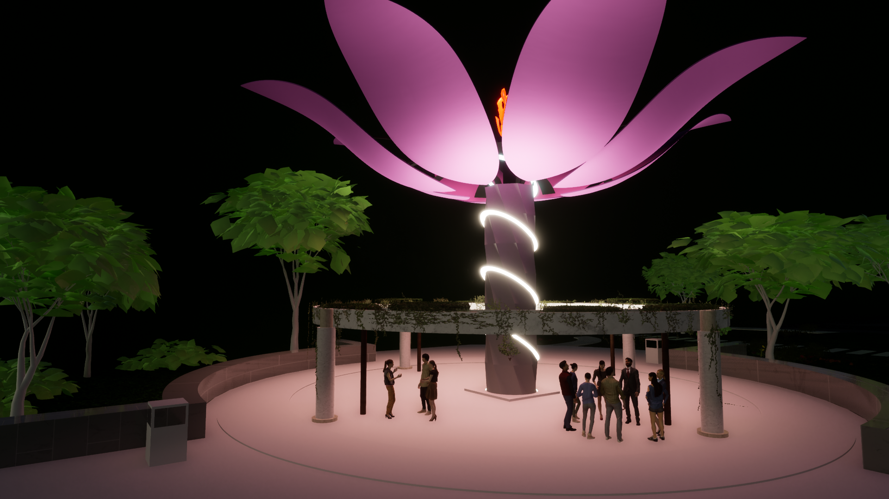

Floom Interactive Shelter
Tags: Rhino, Grasshopper, SolidWorks, Geometry Optimization,
Architecture, Origami Mechanisms
This was my project for my Design Thinking and Innovation module in
term 2. The purpose of the project was to improve social cohesion in
the aftermath of the COVID virus by recreating one of the structures
in the Changi Business Park area. My team consisted of a mix of people
who were software orientated, systems oriented, and me who was
engineering orientated. After going through the double diamond design
process to facilitate idea selection and refinement, we decided on
building a shelter structure that opens up when people are near, and
produces other effects such as rotating, music, and lights with more
people.
Floom is a flower structure that opens up when there is a person
nearby. When there is more than one person, it starts playing music
and starts the light show at night. This attracts people nearby and
improves social cohesion.

The main mechanism to open up the flower lies in the origami
mechanism in the 'stem'. The rotation of the motor at the bottom of
the structure is directly transferred through the 'stem' to the top of
the flower to open up the flower. I produced the structure in Rhino
(for aesthetics) and SolidWorks (for simulation). The mechanism was
also constructed physically using paper.
Initially, I wanted each layer to contain 8 sides to ensure stability
and cut fabrication costs. However, after calculating the geometry of
the structure, I found out that for the angle we used, the shape would
be impossible and the minimum number of sides in order to have the
structure would be 9 sides. Thus, we have to update the design.
Eventually, being the engineer within the team I produced a 1:8 scaled
down version of the structure, with the rotation and light mechanisms
within.
The prototype was then presented to judges with a short video that
shows the idealized product.
Link to video: https://www.youtube.com/watch?v=r4ylkIjjTZc